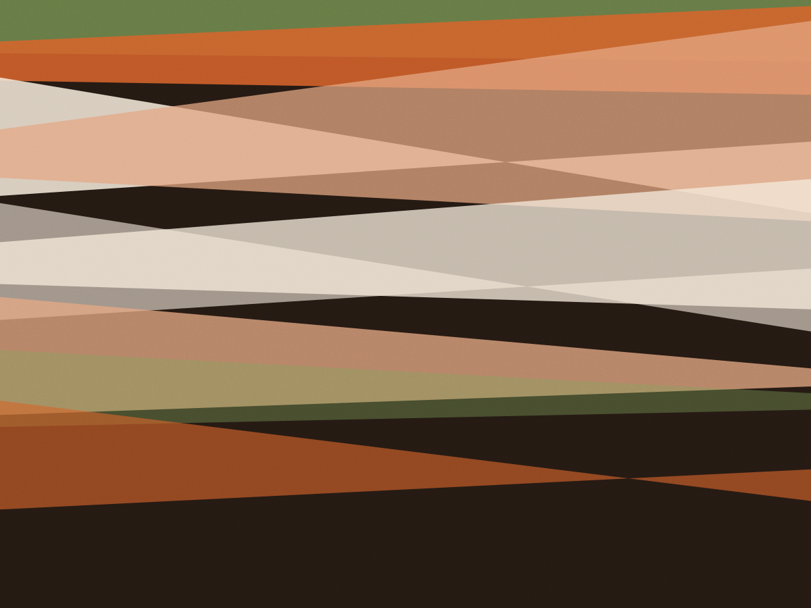
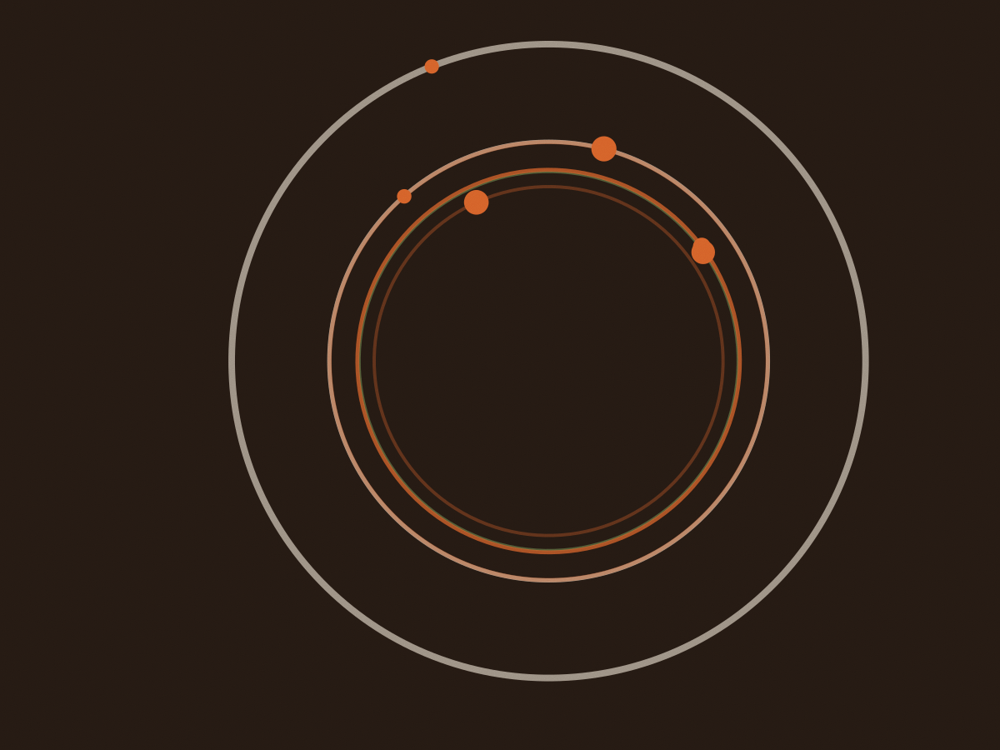
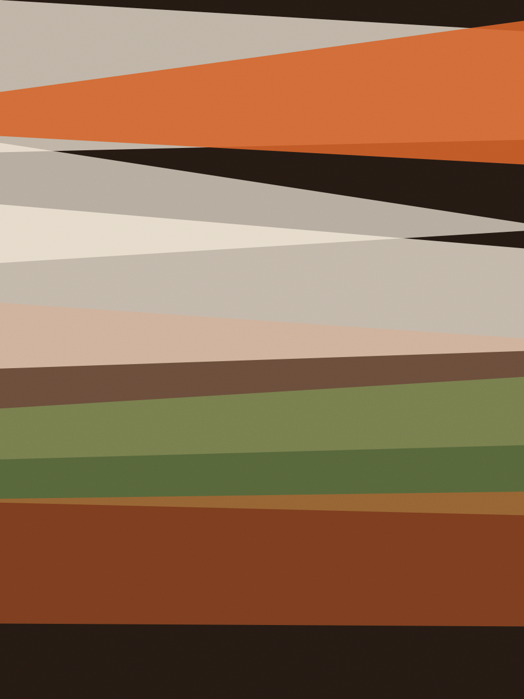

Perdizes · desde 1998
Panela de ferro, forno a lenha, mesa comprida
Abrimos às 12h e às 19h na Rua Cardoso de Almeida, 620. O feijão de corda começa na véspera e o leitão entra no forno às 9h da manhã. Prato principal de R$ 48 a R$ 96, porção para dois.

Forno de tijolo refratário construído em 2003 no fundo do salão. A lenha é de eucalipto, seca por oito meses.
O feijão fica seis horas no fogo baixo. Não existe atalho, e eu não vou inventar um para caber no horário de ninguém. Neide Barbosa, cozinheira da casa desde 1998
Cardápio escrito à mão todo dia às 10h30, depois de ver o que chegou da feira.
Cardápio de uma terça
Saiu do forno às 11h30 e às 18h30. O que acaba sai da lousa: o leitão, quase sempre antes das 14h.
Antônio abriu com quatro mesas
Em 1998 a Casa Boa era uma garagem na Cardoso de Almeida com quatro mesas de madeira e um fogão de seis bocas. Antônio Barbosa cozinhava, Neide atendia e a filha dos dois, Marina, lavava prato no quintal.
O forno de tijolo chegou em 2003, construído pelo pedreiro Zeca em três semanas. Hoje ele assa o leitão e a paleta de cordeiro, e é o único forno da casa: quando está aceso, o salão inteiro fica com cheiro de lenha.
Quem toca a cozinha agora é Marina, com Neide ainda de pé às 9h cortando couve. A receita do feijão tropeiro ninguém escreveu: está na cabeça das duas e muda de tempero conforme a linguiça que chega.
- Forno
- tijolo refratário, 2003
- Salão
- 42 lugares e a mesa de catorze
- Cozinha
- Marina Barbosa, desde 2011
- Lenha
- eucalipto seco por oito meses

A casa por dentro

Encomendei o leitão para o aniversário de setenta anos do meu pai, em 2019. Desde então não comemoro em outro lugar. Fábio Nakamura, cliente desde 2019
Encomenda de leitão inteiro para retirada: três dias de antecedência e R$ 420.
O que dizem na saída
-
“Almoço aqui toda quarta com o time. A conta fecha em R$ 70 por cabeça, com couvert e uma lata de cerveja cada um.”
Rodrigo Sampaio, 39 anos, engenheiro. Cliente desde 2017.
-
“Vim pelo feijão tropeiro e voltei pelo pudim. A Neide corta a fatia na frente da gente, do jeito que a minha avó fazia.”
Cláudia Ferraz, 61 anos, aposentada. Cliente desde 2004.
-
“Trouxe clientes de fora do país e o Antônio explicou cada prato em português devagar, com a maior paciência. Levaram a receita do tropeiro por escrito no guardanapo.”
Tereza Okamoto, 47 anos, tradutora. Cliente desde 2012.
Reserva de mesa
Mesa para até seis pessoas por telefone. Acima disso, a mesa comprida e dois dias de antecedência.
Rua Cardoso de Almeida, 620
Perdizes, São Paulo. A dois quarteirões da praça, com estacionamento conveniado na mesma rua, ao lado da padaria. A entrada é pela porta de madeira, sem placa grande.
| Dia | Almoço | Jantar |
|---|---|---|
| Terça a quinta | 12h às 15h | 19h às 23h |
| Sexta e sábado | 12h às 15h30 | 19h às 23h30 |
| Domingo | 12h às 16h | fechado |
| Segunda | fechado | fechado |